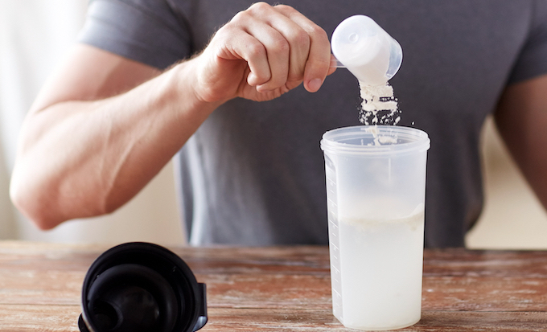

Proteinshake

Description
To make a good proteinshake there you have to mix a good amount of proteinpowder
with a good amount of milk. This drink will help you get the optimum amont of
protein per day, namely 1 gram per pund of body weight.
Ingredients
- Proteinpowder - two scoops
- Milk - 300ml
- Shaker
Steps
- Add a small amont of milk to the bottom of the shaker
- Pour all the proteinpowder into the shaker
- Add the remaning milk
- SHAKE SHAKE SHAKE!
- Serve in seperate glass or drink straight out of the shaker